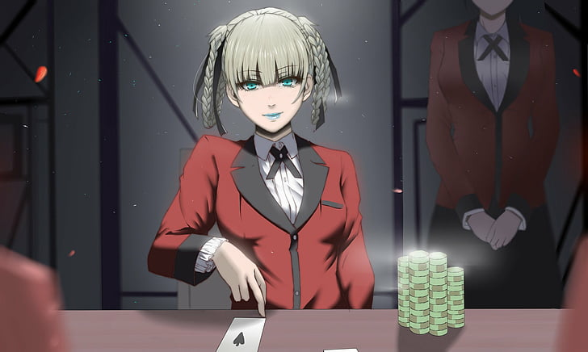
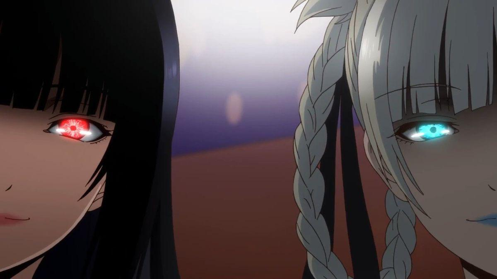

Kirari Momobami (桃もも喰ばみ綺き羅ら莉り Momobami Kirari) é a atual presidente do Grêmio Estudantil da Escola Particular Hyakkao e a responsável pela sua hierarquia.
Kirari é uma garota de estatura relativamente mediana e corpo curvilíneo. Ela possui longos cabelos brancos o qual ela sempre mantém em duas tranças com fitas pretas e olhos azuis. Ela veste o uniforme feminino padrão da Escola Particular Hyakkao, que é uma camisa abotoada branca de mangas com babado, um blazer vermelho com detalhes pretos nos punhos e ao redor do pescoço decorado com botões dourados, com uma gravata cruzada preta junto com uma saia de cor cinza, meia-calça preta e sapatos marrons com solas pretas. Suas unhas são azuis e usa batom da mesma cor.
Kirari é uma garota de personalidade misteriosa e imprevisível, descrita como uma moça educada, refinada e sofisticada. Possui atitudes calculistas, manipuladoras e psicopatas mostrando ser alguém que não se importa com mais ninguém além de si própria, pondo a si e aos seus pensamentos em primeiro lugar; isso é bem demonstrado quando Mary Saotome recusa seu convite para entrar no Grêmio, já que ela apenas ridicularizou-a e a qualquer motivos que a outra talvez possuísse. Por ser a criadora do sistema de bichos de estimação dentro da escola, é correto afirmar que Kirari é sádica e não possui apego à vida humana, simplesmente seguindo o que lhe interessa e descartando o que é entediante. Também não se importa muito consigo mesma, dizendo que o resultado não afetará a diversão da jornada que levar em sua vida. Costuma chamar Hyakkao de um aquário e comparar o sistema de bichos de estimação à teia alimentar da natureza, onde apenas o mais forte sobrevive, e gosta de observar as atitudes das pessoas que precisam lutar para conquistar o topo outra vez. Além disso, sempre aposta tudo o que tem; não tendo medo de assumir riscos é o que a torna uma ótima apostadora. Tudo isso a torna parecida com Yumeko Jabami.
VOLTAR